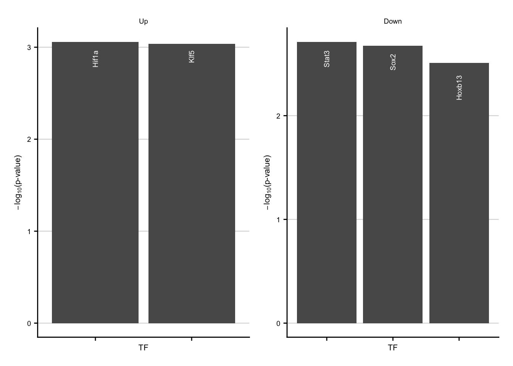
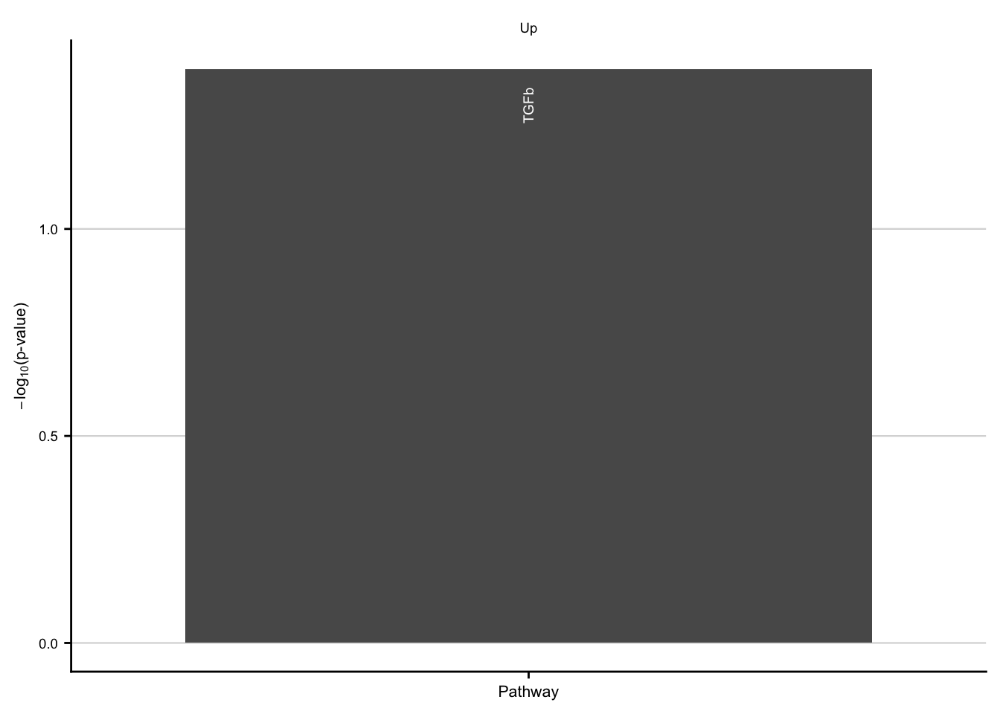
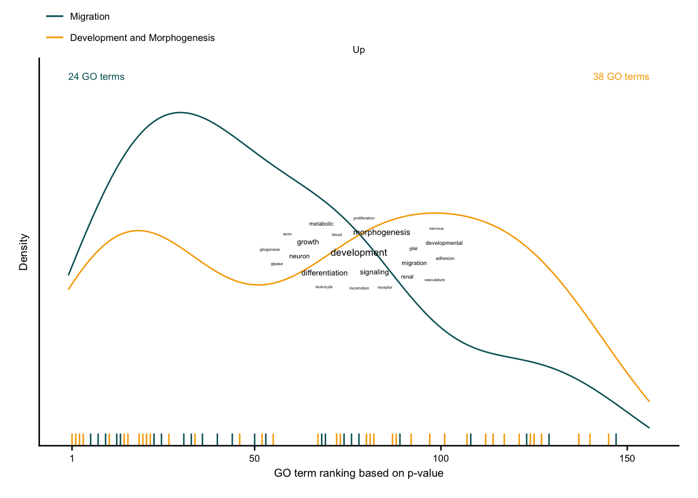
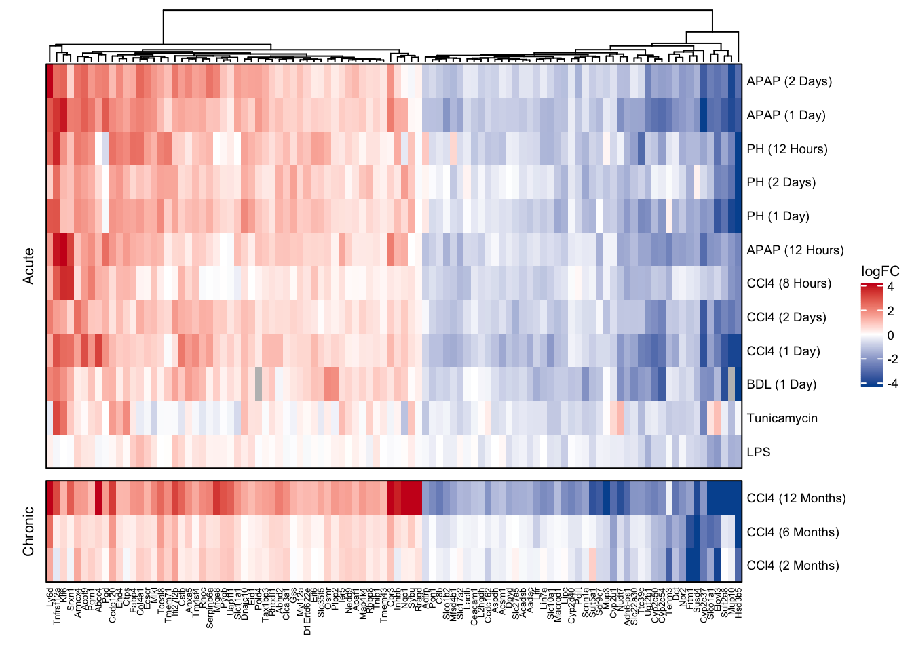
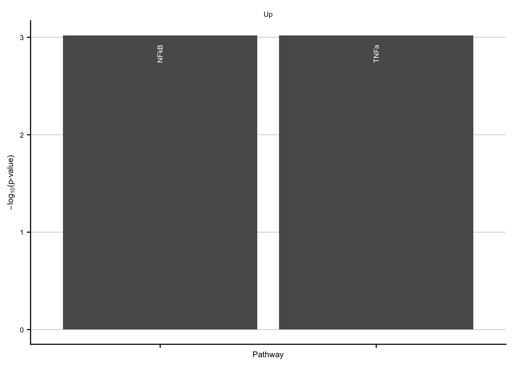
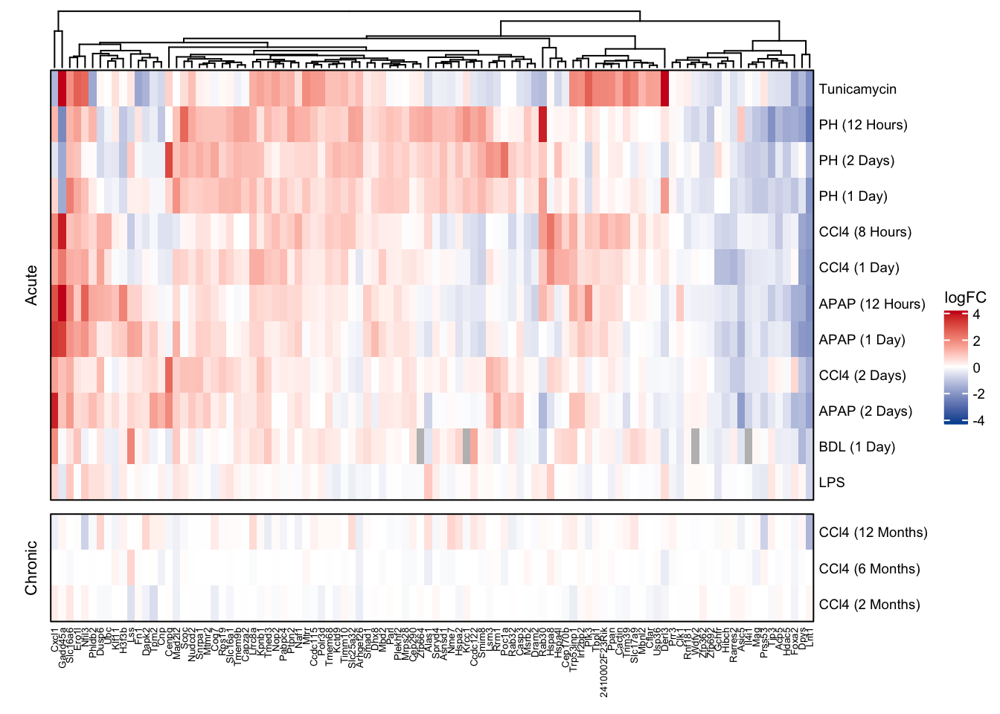
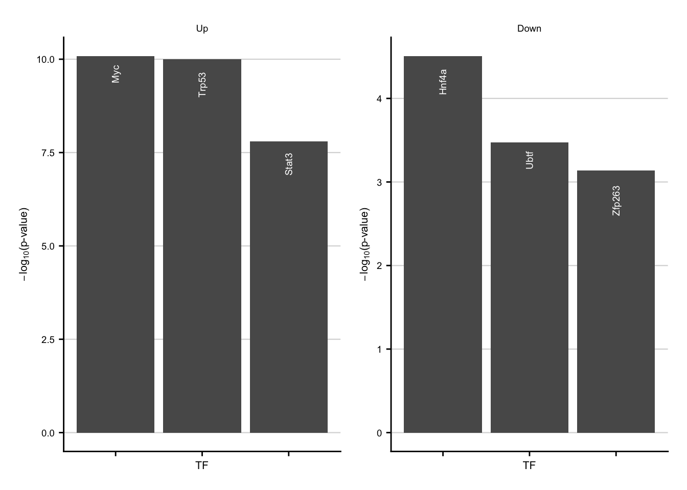
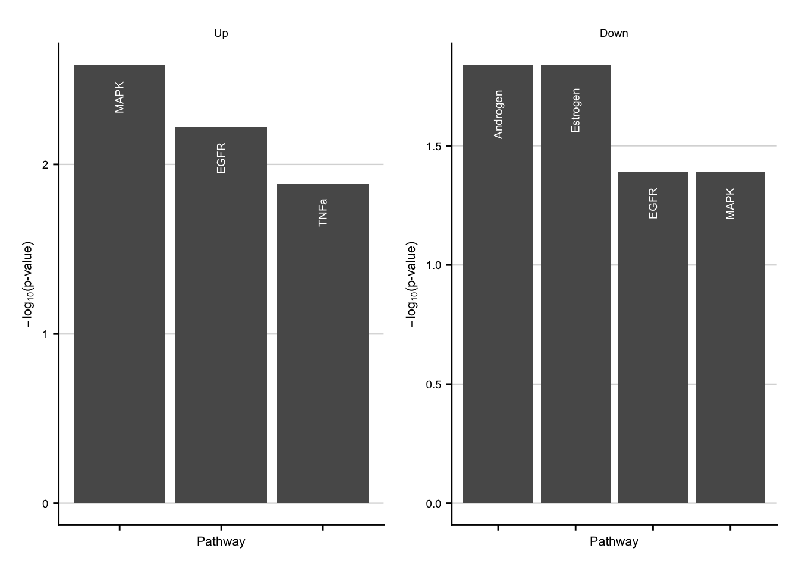
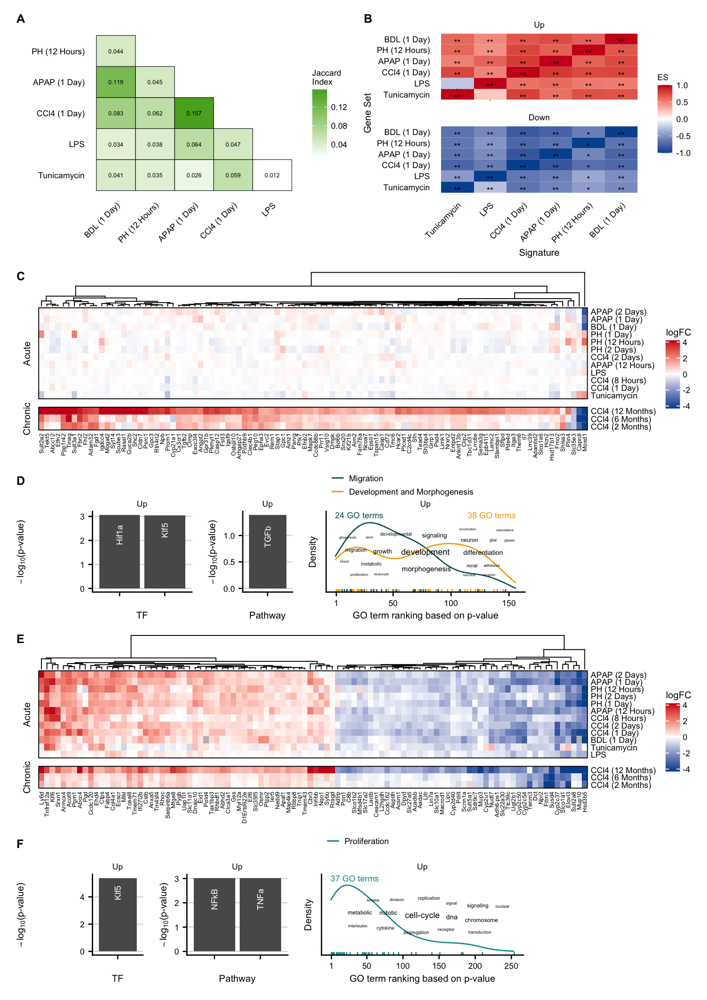

Chronic vs. acute (Fig. 3)
Last updated: 2021-03-29
Checks: 7 0
Knit directory: liver-disease-atlas/
This reproducible R Markdown analysis was created with workflowr (version 1.6.2). The Checks tab describes the reproducibility checks that were applied when the results were created. The Past versions tab lists the development history.
Great! Since the R Markdown file has been committed to the Git repository, you know the exact version of the code that produced these results.
Great job! The global environment was empty. Objects defined in the global environment can affect the analysis in your R Markdown file in unknown ways. For reproduciblity it’s best to always run the code in an empty environment.
The command set.seed(20201218) was run prior to running the code in the R Markdown file. Setting a seed ensures that any results that rely on randomness, e.g. subsampling or permutations, are reproducible.
Great job! Recording the operating system, R version, and package versions is critical for reproducibility.
Nice! There were no cached chunks for this analysis, so you can be confident that you successfully produced the results during this run.
Great job! Using relative paths to the files within your workflowr project makes it easier to run your code on other machines.
Great! You are using Git for version control. Tracking code development and connecting the code version to the results is critical for reproducibility.
The results in this page were generated with repository version bf42564. See the Past versions tab to see a history of the changes made to the R Markdown and HTML files.
Note that you need to be careful to ensure that all relevant files for the analysis have been committed to Git prior to generating the results (you can use wflow_publish or wflow_git_commit). workflowr only checks the R Markdown file, but you know if there are other scripts or data files that it depends on. Below is the status of the Git repository when the results were generated:
Ignored files:
Ignored: .DS_Store
Ignored: .Rhistory
Ignored: .Rproj.user/
Ignored: analysis/01-mouse-chronic-ccl4_cache/
Ignored: analysis/02-mouse-acute-apap_cache/
Ignored: analysis/03-mouse-acute-ccl4_cache/
Ignored: analysis/04-mouse-acute-ph_cache/
Ignored: analysis/05-mouse-acute-bdl_cache/
Ignored: analysis/06-mouse-acute-lps_cache/
Ignored: analysis/07-mouse-acute-tunicamycin_cache/
Ignored: analysis/08-human-diehl-nafld_cache/
Ignored: analysis/09-human-hampe13-nash_cache/
Ignored: analysis/10-human-hampe14-misc_cache/
Ignored: analysis/11-human-hoang-nafld_cache/
Ignored: analysis/12-human-ramnath-fibrosis_cache/
Ignored: analysis/13-meta-chronic-vs-acute_cache/
Ignored: analysis/14-meta-mouse-vs-human_cache/
Ignored: analysis/15-plot-chronic-ccl4_cache/
Ignored: analysis/16-plot-acute-apap_cache/
Ignored: analysis/17-plot-acute-ccl4_cache/
Ignored: analysis/18-plot-acute-ph_cache/
Ignored: analysis/19-plot-acute-bdl_cache/
Ignored: analysis/20-plot-study-overview_cache/
Ignored: analysis/22-plot-mouse-vs-human_cache/
Ignored: analysis/23-plot-precision-recall_cache/
Ignored: analysis/24-save-tables_cache/
Ignored: code/.DS_Store
Ignored: code/README.html
Ignored: code/meta-mouse-vs-human/.DS_Store
Ignored: data.zip
Ignored: data/.DS_Store
Ignored: data/Icon
Ignored: data/annotation/
Ignored: data/human-diehl-nafld/
Ignored: data/human-hampe13-nash/
Ignored: data/human-hampe14-misc/
Ignored: data/human-hoang-nafld/
Ignored: data/human-ramnath-fibrosis/
Ignored: data/meta-chronic-vs-acute/
Ignored: data/meta-mouse-vs-human/
Ignored: data/mouse-acute-apap/
Ignored: data/mouse-acute-bdl/
Ignored: data/mouse-acute-ccl4/
Ignored: data/mouse-acute-lps/
Ignored: data/mouse-acute-ph/
Ignored: data/mouse-acute-tunicamycin/
Ignored: data/mouse-chronic-ccl4/
Ignored: external_software/.DS_Store
Ignored: external_software/README.html
Ignored: external_software/stem/.DS_Store
Ignored: figures/.DS_Store
Ignored: figures/Figure 1 (partial).pdf
Ignored: figures/Figure 1.pdf
Ignored: figures/Figure 1.png
Ignored: figures/Figure 2 (partial).pdf
Ignored: figures/Figure 2.pdf
Ignored: figures/Figure 2.png
Ignored: figures/Figure 3.pdf
Ignored: figures/Figure 3.png
Ignored: figures/Figure 4.pdf
Ignored: figures/Figure 4.png
Ignored: figures/Figure 5.pdf
Ignored: figures/Figure 6.png
Ignored: figures/Icon
Ignored: figures/Supplementary Figure 0.1.pdf
Ignored: figures/Supplementary Figure 0.1.png
Ignored: figures/Supplementary Figure 1.1.pdf
Ignored: figures/Supplementary Figure 1.1.png
Ignored: figures/Supplementary Figure 2.1.pdf
Ignored: figures/Supplementary Figure 2.1.png
Ignored: figures/Supplementary Figure 2.2.pdf
Ignored: figures/Supplementary Figure 2.2.png
Ignored: figures/Supplementary Figure 2.3.pdf
Ignored: figures/Supplementary Figure 2.3.png
Ignored: figures/Supplementary Figure 2.4.pdf
Ignored: figures/Supplementary Figure 2.4.png
Ignored: figures/Supplementary Figure 2.5.pdf
Ignored: figures/Supplementary Figure 2.5.png
Ignored: figures/Supplementary Figure 2.6.pdf
Ignored: figures/Supplementary Figure 2.6.png
Ignored: figures/Supplementary Figure 2.7.pdf
Ignored: figures/Supplementary Figure 2.7.png
Ignored: figures/Supplementary Figure 3.1.pdf
Ignored: figures/Supplementary Figure 3.1.png
Ignored: figures/Supplementary Figure 3.2.pdf
Ignored: figures/Supplementary Figure 3.2.png
Ignored: figures/Supplementary Figure 3.3.pdf
Ignored: figures/Supplementary Figure 3.3.png
Ignored: figures/Supplementary Figure 3.4.pdf
Ignored: figures/Supplementary Figure 3.4.png
Ignored: figures/Supplementary Figure 4.1.pdf
Ignored: figures/Supplementary Figure 4.1.png
Ignored: figures/Supplementary Figure 4.2.pdf
Ignored: figures/Supplementary Figure 4.2.png
Ignored: figures/Supplementary Figure 5.1.pdf
Ignored: figures/Supplementary Figure 5.1.png
Ignored: figures/figures.key
Ignored: figures/histologies.key
Ignored: figures/panels/
Ignored: figures/tmp/.DS_Store
Ignored: figures/tmp/Fig5A1.pdf
Ignored: figures/tmp/Fig5A2.pdf
Ignored: figures/tmp/Icon
Ignored: geo_submission/
Ignored: output/.DS_Store
Ignored: output/Icon
Ignored: output/README.html
Ignored: output/human-diehl-nafld/Icon
Ignored: output/human-diehl-nafld/limma_result.rds
Ignored: output/human-diehl-nafld/meta_data.rds
Ignored: output/human-diehl-nafld/normalized_expression.rds
Ignored: output/human-diehl-nafld/pca_result.rds
Ignored: output/human-diehl-nafld/z_scores.rds
Ignored: output/human-hampe13-nash/Icon
Ignored: output/human-hampe13-nash/limma_result.rds
Ignored: output/human-hampe13-nash/meta_data.rds
Ignored: output/human-hampe13-nash/normalized_expression.rds
Ignored: output/human-hampe13-nash/pca_result.rds
Ignored: output/human-hampe13-nash/z_scores.rds
Ignored: output/human-hampe14-misc/Icon
Ignored: output/human-hampe14-misc/limma_result.rds
Ignored: output/human-hampe14-misc/meta_data.rds
Ignored: output/human-hampe14-misc/normalized_expression.rds
Ignored: output/human-hampe14-misc/pca_result.rds
Ignored: output/human-hampe14-misc/z_scores.rds
Ignored: output/human-hoang-nafld/Icon
Ignored: output/human-hoang-nafld/limma_result.rds
Ignored: output/human-hoang-nafld/normalized_expression.rds
Ignored: output/human-hoang-nafld/pca_result.rds
Ignored: output/human-hoang-nafld/z_scores.rds
Ignored: output/human-ramnath-fibrosis/Icon
Ignored: output/human-ramnath-fibrosis/limma_result.rds
Ignored: output/human-ramnath-fibrosis/normalized_expression.rds
Ignored: output/human-ramnath-fibrosis/pca_result.rds
Ignored: output/human-ramnath-fibrosis/z_scores.rds
Ignored: output/meta-chronic-vs-acute/Icon
Ignored: output/meta-chronic-vs-acute/acute_gene_pool.rds
Ignored: output/meta-chronic-vs-acute/chronic_gene_pool.rds
Ignored: output/meta-chronic-vs-acute/exclusive_genes_characterization.rds
Ignored: output/meta-chronic-vs-acute/gene_membership.rds
Ignored: output/meta-chronic-vs-acute/gene_set_similarity.rds
Ignored: output/meta-chronic-vs-acute/go_cluster_ranking.rds
Ignored: output/meta-chronic-vs-acute/go_wordcounts.rds
Ignored: output/meta-chronic-vs-acute/interstudy_enrichment.rds
Ignored: output/meta-chronic-vs-acute/limma_result.rds
Ignored: output/meta-chronic-vs-acute/meta_data.rds
Ignored: output/meta-chronic-vs-acute/pca_dist.rds
Ignored: output/meta-chronic-vs-acute/ranked_common_genes.rds
Ignored: output/meta-chronic-vs-acute/ranked_exclusive_acute_genes.rds
Ignored: output/meta-chronic-vs-acute/ranked_exclusive_chronic_genes.rds
Ignored: output/meta-chronic-vs-acute/union_acute_geneset.rds
Ignored: output/meta-chronic-vs-acute/union_chronic_geneset.rds
Ignored: output/meta-mouse-vs-human/Icon
Ignored: output/meta-mouse-vs-human/chronic_mouse_deg_numbers.rds
Ignored: output/meta-mouse-vs-human/consistent_genes.rds
Ignored: output/meta-mouse-vs-human/cross_species_enrichment.rds
Ignored: output/meta-mouse-vs-human/cross_species_similarity.rds
Ignored: output/meta-mouse-vs-human/etiology_gene_sets.rds
Ignored: output/meta-mouse-vs-human/gene_set_similarity.rds
Ignored: output/meta-mouse-vs-human/go_cluster_ranking.rds
Ignored: output/meta-mouse-vs-human/go_wordcounts.rds
Ignored: output/meta-mouse-vs-human/gsea_res.rds
Ignored: output/meta-mouse-vs-human/individual_le.rds
Ignored: output/meta-mouse-vs-human/interstudy_enrichment.rds
Ignored: output/meta-mouse-vs-human/leading_edges.rds
Ignored: output/meta-mouse-vs-human/leading_edges_characterization.rds
Ignored: output/meta-mouse-vs-human/leading_edges_mgi.rds
Ignored: output/meta-mouse-vs-human/limma_result.rds
Ignored: output/meta-mouse-vs-human/meta_data.rds
Ignored: output/meta-mouse-vs-human/precision_recall.rds
Ignored: output/meta-mouse-vs-human/precision_recall_chronicity.rds
Ignored: output/meta-mouse-vs-human/teufel_genes.rds
Ignored: output/meta-mouse-vs-human/teufel_genes_hs.rds
Ignored: output/meta-mouse-vs-human/z_score_pca.rds
Ignored: output/mouse-acute-apap/.DS_Store
Ignored: output/mouse-acute-apap/Icon
Ignored: output/mouse-acute-apap/limma_result.rds
Ignored: output/mouse-acute-apap/meta_data.rds
Ignored: output/mouse-acute-apap/normalized_expression.rds
Ignored: output/mouse-acute-apap/pca_result.rds
Ignored: output/mouse-acute-apap/stem/.DS_Store
Ignored: output/mouse-acute-apap/stem/Icon
Ignored: output/mouse-acute-apap/stem/input/Icon
Ignored: output/mouse-acute-apap/stem/input/apap.txt
Ignored: output/mouse-acute-apap/stem/output/Icon
Ignored: output/mouse-acute-apap/stem_characterization.rds
Ignored: output/mouse-acute-apap/stem_result.rds
Ignored: output/mouse-acute-apap/z_scores.rds
Ignored: output/mouse-acute-bdl/.DS_Store
Ignored: output/mouse-acute-bdl/Icon
Ignored: output/mouse-acute-bdl/limma_result.rds
Ignored: output/mouse-acute-bdl/meta_data.rds
Ignored: output/mouse-acute-bdl/normalized_expression.rds
Ignored: output/mouse-acute-bdl/pca_result.rds
Ignored: output/mouse-acute-bdl/stem/.DS_Store
Ignored: output/mouse-acute-bdl/stem/Icon
Ignored: output/mouse-acute-bdl/stem/input/Icon
Ignored: output/mouse-acute-bdl/stem/input/bdl.txt
Ignored: output/mouse-acute-bdl/stem/output/Icon
Ignored: output/mouse-acute-bdl/stem_characterization.rds
Ignored: output/mouse-acute-bdl/stem_result.rds
Ignored: output/mouse-acute-bdl/z_scores.rds
Ignored: output/mouse-acute-ccl4/.DS_Store
Ignored: output/mouse-acute-ccl4/Icon
Ignored: output/mouse-acute-ccl4/limma_result.rds
Ignored: output/mouse-acute-ccl4/meta_data.rds
Ignored: output/mouse-acute-ccl4/normalized_expression.rds
Ignored: output/mouse-acute-ccl4/pca_result.rds
Ignored: output/mouse-acute-ccl4/stem/.DS_Store
Ignored: output/mouse-acute-ccl4/stem/Icon
Ignored: output/mouse-acute-ccl4/stem/input/Icon
Ignored: output/mouse-acute-ccl4/stem/input/ccl4.txt
Ignored: output/mouse-acute-ccl4/stem/output/Icon
Ignored: output/mouse-acute-ccl4/stem_characterization.rds
Ignored: output/mouse-acute-ccl4/stem_result.rds
Ignored: output/mouse-acute-ccl4/z_scores.rds
Ignored: output/mouse-acute-lps/Icon
Ignored: output/mouse-acute-lps/limma_result.rds
Ignored: output/mouse-acute-lps/meta_data.rds
Ignored: output/mouse-acute-lps/normalized_expression.rds
Ignored: output/mouse-acute-lps/pca_result.rds
Ignored: output/mouse-acute-lps/z_scores.rds
Ignored: output/mouse-acute-ph/.DS_Store
Ignored: output/mouse-acute-ph/Icon
Ignored: output/mouse-acute-ph/limma_result.rds
Ignored: output/mouse-acute-ph/meta_data.rds
Ignored: output/mouse-acute-ph/normalized_expression.rds
Ignored: output/mouse-acute-ph/pca_result.rds
Ignored: output/mouse-acute-ph/stem/.DS_Store
Ignored: output/mouse-acute-ph/stem/Icon
Ignored: output/mouse-acute-ph/stem/input/Icon
Ignored: output/mouse-acute-ph/stem/input/hepatec.txt
Ignored: output/mouse-acute-ph/stem/output/Icon
Ignored: output/mouse-acute-ph/stem_characterization.rds
Ignored: output/mouse-acute-ph/stem_result.rds
Ignored: output/mouse-acute-ph/z_scores.rds
Ignored: output/mouse-acute-tunicamycin/Icon
Ignored: output/mouse-acute-tunicamycin/limma_result.rds
Ignored: output/mouse-acute-tunicamycin/meta_data.rds
Ignored: output/mouse-acute-tunicamycin/normalized_expression.rds
Ignored: output/mouse-acute-tunicamycin/pca_result.rds
Ignored: output/mouse-acute-tunicamycin/z_scores.rds
Ignored: output/mouse-chronic-ccl4/.DS_Store
Ignored: output/mouse-chronic-ccl4/Icon
Ignored: output/mouse-chronic-ccl4/limma_result.rds
Ignored: output/mouse-chronic-ccl4/limma_result_hs.rds
Ignored: output/mouse-chronic-ccl4/normalized_expression.rds
Ignored: output/mouse-chronic-ccl4/pca_result.rds
Ignored: output/mouse-chronic-ccl4/stem/.DS_Store
Ignored: output/mouse-chronic-ccl4/stem/Icon
Ignored: output/mouse-chronic-ccl4/stem/input/Icon
Ignored: output/mouse-chronic-ccl4/stem/input/pure_ccl4.txt
Ignored: output/mouse-chronic-ccl4/stem/output/Icon
Ignored: output/mouse-chronic-ccl4/stem_characterization.rds
Ignored: output/mouse-chronic-ccl4/stem_result.rds
Ignored: output/mouse-chronic-ccl4/z_scores.rds
Ignored: renv/library/
Ignored: renv/staging/
Ignored: tables/Supplementary Table 1.xlsx
Ignored: tables/Supplementary Table xy consistent_genes.xlsx
Ignored: tables/Supplementary Table xy exclusive_common_genes.xlsx
Ignored: tables/Supplementary Table xy human_degs.xlsx
Ignored: tables/Supplementary Table xy stem_results.xlsx
Unstaged changes:
Modified: analysis/01-mouse-chronic-ccl4.Rmd
Modified: analysis/02-mouse-acute-apap.Rmd
Modified: analysis/03-mouse-acute-ccl4.Rmd
Modified: analysis/04-mouse-acute-ph.Rmd
Modified: analysis/05-mouse-acute-bdl.Rmd
Modified: analysis/06-mouse-acute-lps.Rmd
Modified: analysis/07-mouse-acute-tunicamycin.Rmd
Modified: analysis/08-human-diehl-nafld.Rmd
Modified: analysis/09-human-hampe13-nash.Rmd
Modified: analysis/10-human-hampe14-misc.Rmd
Modified: analysis/11-human-hoang-nafld.Rmd
Modified: analysis/12-human-ramnath-fibrosis.Rmd
Modified: analysis/13-meta-chronic-vs-acute.Rmd
Modified: analysis/14-meta-mouse-vs-human.Rmd
Note that any generated files, e.g. HTML, png, CSS, etc., are not included in this status report because it is ok for generated content to have uncommitted changes.
These are the previous versions of the repository in which changes were made to the R Markdown (analysis/21-plot-chronic-vs-acute.Rmd) and HTML (docs/21-plot-chronic-vs-acute.html) files. If you’ve configured a remote Git repository (see ?wflow_git_remote), click on the hyperlinks in the table below to view the files as they were in that past version.
| File | Version | Author | Date | Message |
|---|---|---|---|---|
| Rmd | bf42564 | christianholland | 2021-03-29 | restructured fig3 |
| html | 24c0c74 | christianholland | 2021-02-28 | Build site. |
| html | 5e36b25 | christianholland | 2021-02-28 | Build site. |
| Rmd | 7f331d0 | christianholland | 2021-02-28 | wflow_publish("analysis/*", delete_cache = TRUE, republish = TRUE) |
Introduction
Here we generate publication-ready plots for the comparison of chronic and acute mouse models.
Libraries and sources
These libraries and sources are used for this analysis.
library(tidyverse)
library(tidylog)
library(here)
library(AachenColorPalette)
library(VennDiagram)
library(scales)
library(lemon)
library(ComplexHeatmap)
library(ggwordcloud)
library(circlize)
library(patchwork)
source(here("code/utils-plots.R"))
source(here("code/utils-utils.R"))Definition of global variables and functions that are used throughout this analysis.
# i/o
data_path <- "data/meta-chronic-vs-acute"
output_path <- "output/meta-chronic-vs-acute"
# graphical parameters
# fontsize
fz <- 7
# color function for heatmaps
col_fun <- colorRamp2(
c(-4, 0, 4),
c(aachen_color("blue"), "white", aachen_color("red"))
)
# keys to annotate contrasts
key_mm <- readRDS(here("data/meta-chronic-vs-acute/contrast_annotation.rds"))Time point of maximal liver damage
keys <- key_mm %>%
filter(class == "Acute" & treatment_abbr %in% c("CCl4", "APAP", "PH")) %>%
distinct(time = value, label = time_label2, treatment_abbr) %>%
drop_na() %>%
add_row(time = 0, label = "Control", treatment_abbr = "CCl4") %>%
add_row(time = 0, label = "Control", treatment_abbr = "APAP") %>%
add_row(time = 0, label = "Control", treatment_abbr = "PH") %>%
mutate(time = ordered(time))
pca_dist <- readRDS(here(output_path, "pca_dist.rds")) %>%
inner_join(keys, by = c("time", "treatment_abbr")) %>%
arrange(time) %>%
mutate(label = fct_inorder(label))
max_liver_damage <- pca_dist %>%
ggplot(aes(x = label, y = dist, fill = max)) +
geom_col() +
my_theme(grid = "y", fsize = fz) +
scale_fill_manual(values = aachen_color(c("black50", "green"))) +
labs(
x = NULL,
y = "Absolute mean distance to control along PC1"
) +
theme(
legend.position = "none",
axis.text.x = element_text(angle = 45, hjust = 1)
) +
facet_rep_wrap(~treatment_abbr, scales = "free")
max_liver_damage
| Version | Author | Date |
|---|---|---|
| 3340593 | christianholland | 2021-02-28 |
Similarity of acute gene sets
keys <- key_mm %>%
distinct(contrast, label = label2)
j <- readRDS(here(output_path, "gene_set_similarity.rds")) %>%
filter(top_n_genes == 500) %>%
separate(set1, into = c("tmp1", "tmp2", "tmp3", "contrast"), sep = "-") %>%
select(-starts_with("tmp")) %>%
inner_join(keys, by = "contrast") %>%
rename(set1 = label) %>%
select(-contrast) %>%
separate(set2, into = c("tmp1", "tmp2", "tmp3", "contrast"), sep = "-") %>%
select(-starts_with("tmp")) %>%
inner_join(keys, by = "contrast") %>%
rename(set2 = label) %>%
select(-c(contrast))
acute_gs_sim <- j %>%
mutate(set1 = fct_rev(set1)) %>%
ggplot(aes(
x = set1, y = set2, fill = similarity,
label = round(similarity, 3)
)) +
geom_tile(color = "black", size = 0.2) +
scale_fill_gradient(low = "white", high = aachen_color("green")) +
labs(x = NULL, y = NULL, fill = "Jaccard\nIndex") +
theme(
axis.text.x = element_text(angle = 45, hjust = 1),
axis.line = element_blank(),
axis.ticks = element_blank()
) +
geom_text(size = (fz - 2) / (14 / 5)) +
my_theme(grid = "no", fsize = fz)
acute_gs_sim
| Version | Author | Date |
|---|---|---|
| 3340593 | christianholland | 2021-02-28 |
Interstudy enrichment of acute studies
keys <- key_mm %>%
distinct(contrast, label = label2)
gsea_res <- readRDS(here(output_path, "interstudy_enrichment.rds")) %>%
filter(top_n_genes == 500) %>%
separate(signature,
into = c("tmp1", "tmp2", "tmp3", "contrast"),
sep = "-"
) %>%
select(-starts_with("tmp")) %>%
inner_join(keys, by = "contrast") %>%
rename(signature = label) %>%
select(-contrast) %>%
separate(geneset, into = c("tmp1", "tmp2", "tmp3", "contrast"), sep = "-") %>%
select(-starts_with("tmp")) %>%
inner_join(keys, by = "contrast") %>%
rename(geneset = label) %>%
select(-contrast)
acute_interstudy_enrichment <- gsea_res %>%
mutate(direction = fct_rev(str_to_title(direction))) %>%
mutate(label = gtools::stars.pval(padj)) %>%
ggplot(aes(x = signature, y = geneset, fill = ES)) +
geom_tile() +
geom_text(aes(label = label), size = fz / (14 / 5), vjust = 1) +
facet_wrap(~direction, ncol = 1) +
theme(
axis.text.x = element_text(angle = 45, hjust = 1),
axis.line = element_blank(),
axis.ticks = element_blank()
) +
scale_fill_gradient2(
low = aachen_color("blue"), mid = "white",
high = aachen_color("red")
) +
my_theme(grid = "no", fsize = fz) +
labs(x = "Signature", y = "Gene Set", fill = "ES") +
guides(fill = guide_colorbar(title = "ES"))
acute_interstudy_enrichment
| Version | Author | Date |
|---|---|---|
| 3340593 | christianholland | 2021-02-28 |
Union of acute and chronic genes
keys <- key_mm %>%
distinct(contrast, label = label2)
c <- readRDS(here(output_path, "chronic_gene_pool.rds"))
a <- readRDS(here(output_path, "acute_gene_pool.rds"))
df <- bind_rows(c, a) %>%
inner_join(keys, by = "contrast") %>%
mutate(
statistic = case_when(
statistic >= 25 ~ 25,
TRUE ~ statistic
),
class = str_to_title(class)
)
union_a <- df %>%
filter(class == "Acute") %>%
ggplot(aes(x = label, y = fct_reorder(gene, statistic, mean))) +
geom_tile(aes(fill = statistic)) +
theme(
axis.text.x = element_text(angle = 90, hjust = 1, vjust = 0.5),
axis.text.y = element_blank(),
axis.ticks.y = element_blank(),
legend.position = "none"
) +
labs(y = "Pool of acute genes", x = NULL, fill = "t-statistic") +
facet_rep_wrap(~class) +
scale_fill_gradient2(
low = aachen_color("blue"), mid = "white",
high = aachen_color("red")
) +
my_theme(grid = "no", fsize = fz)
union_c <- df %>%
filter(class == "Chronic") %>%
ggplot(aes(
x = label, y = fct_reorder(gene, statistic, mean),
fill = statistic
)) +
geom_tile() +
theme(
axis.text.x = element_text(angle = 90, hjust = 1, vjust = 0.5),
axis.text.y = element_blank(),
axis.ticks.y = element_blank()
) +
labs(y = "Pool of chronic genes", x = NULL, fill = "t-statistic") +
facet_rep_wrap(~class) +
scale_fill_gradient2(
low = aachen_color("blue"), mid = "white",
high = aachen_color("red")
) +
my_theme(grid = "no", fsize = fz)
union_a +
union_c +
plot_layout(widths = c(8, 1))
| Version | Author | Date |
|---|---|---|
| 3340593 | christianholland | 2021-02-28 |
Overlap of unified gene sets
acute_gene_union <- readRDS(here(output_path, "union_acute_geneset.rds")) %>%
mutate(class = "acute")
chronic_gene_union <- readRDS(here(
output_path,
"union_chronic_geneset.rds"
)) %>%
mutate(class = "chronic")
a1 <- acute_gene_union %>% nrow()
a2 <- chronic_gene_union %>% nrow()
ca <- intersect(
acute_gene_union %>% pull(gene),
chronic_gene_union %>% pull(gene)
) %>%
length()
grid.newpage()
v <- grid.grabExpr(draw.pairwise.venn(
area1 = a1, area2 = a2, cross.area = ca,
category = c("Acute", "Chronic"),
# lty = "blank",
cex = 1 / 12 * fz,
fontfamily = rep("sans", 3),
# fill = aachen_color(c("purple", "petrol")),
# cat.col = aachen_color(c("purple", "petrol")),
cat.cex = 1 / 12 * (fz + 1),
cat.fontfamily = rep("sans", 2),
cat.pos = c(340, 20),
cat.just = list(c(0.5, 0), c(0.5, 0))
))Top exclusive chronic genes
Heatmap
keys <- key_mm %>%
distinct(contrast, label2)
df <- readRDS(here(output_path, "ranked_exclusive_chronic_genes.rds"))
contrasts <- readRDS(here(output_path, "limma_result.rds"))
acute_contrasts <- c(
"treat_vs_ctrl",
"inLiver_lps_vs_ctrl",
"ccl_8h_vs_0h", "ccl_24h_vs_0h", "ccl_48h_vs_0h",
"apap_12h_vs_0h", "apap_24h_vs_0h", "apap_48h_vs_0h",
"ph_0.5d", "ph_1d", "ph_2d",
"bdl_vs_sham_1d"
)
mat_exclusive_chronic_genes <- df %>%
filter(rank <= 100) %>%
left_join(contrasts) %>%
filter(contrast %in% acute_contrasts | treatment == "pure_ccl4") %>%
inner_join(keys, by = "contrast") %>%
mutate(gene = as_factor(gene)) %>%
select(gene, label2, logFC) %>%
untdy("gene", "label2", "logFC") %>%
as.matrix()
exclusive_chronic_hmap <- Heatmap(
t(mat_exclusive_chronic_genes),
col = col_fun,
cluster_rows = T, cluster_columns = T,
show_row_dend = F,
row_names_gp = gpar(fontsize = fz), column_names_gp = gpar(fontsize = fz - 2),
name = "logFC",
heatmap_legend_param = list(
title_gp = gpar(
fontface = "plain",
fontsize = fz + 1
),
labels_gp = gpar(fontsize = fz)
),
row_gap = unit(2.5, "mm"),
border = T,
row_split = c(rep("Acute", 12), rep("Chronic", 3)),
row_title_gp = gpar(fontsize = fz + 1)
)
exclusive_chronic_hmap
| Version | Author | Date |
|---|---|---|
| 3340593 | christianholland | 2021-02-28 |
Characteriatzion via TFs
ora_res <- readRDS(here(
output_path,
"exclusive_genes_characterization.rds"
)) %>%
filter(group %in% c("dorothea") & fdr <= 0.2) %>%
filter(class == "chronic") %>%
mutate(regulation = str_to_title(regulation))
chronic_tfs_up <- ora_res %>%
filter(regulation == "Up") %>%
filter(geneset %in% c("Hif1a", "Klf5")) %>%
ggplot(aes(x = fct_reorder(geneset, p.value), y = -log10(p.value))) +
geom_col() +
geom_text(aes(label = geneset),
color = "white", angle = 90, hjust = 1.5,
size = fz / (14 / 5)
) +
theme(axis.text.x = element_blank()) +
labs(x = "TF", y = expression(-log["10"] * "(p-value)")) +
my_theme(grid = "y", fsize = fz) +
facet_rep_wrap(~regulation)
chronic_tfs_down <- ora_res %>%
filter(regulation == "Down") %>%
slice_min(order_by = p.value, n = 3) %>%
ggplot(aes(x = fct_reorder(geneset, p.value), y = -log10(p.value))) +
geom_col() +
geom_text(aes(label = geneset),
color = "white", angle = 90, hjust = 1.5,
size = fz / (14 / 5)
) +
theme(axis.text.x = element_blank()) +
labs(x = "TF", y = expression(-log["10"] * "(p-value)")) +
my_theme(grid = "y", fsize = fz) +
facet_rep_wrap(~regulation)
chronic_tfs_up + chronic_tfs_down
| Version | Author | Date |
|---|---|---|
| 3340593 | christianholland | 2021-02-28 |
Characteriatzion via pathways
ora_res <- readRDS(here(
output_path,
"exclusive_genes_characterization.rds"
)) %>%
filter(group %in% c("progeny") & fdr <= 0.2) %>%
filter(class == "chronic") %>%
mutate(regulation = str_to_title(regulation))
chronic_pw_up <- ora_res %>%
filter(regulation == "Up") %>%
filter(geneset %in% c("TGFb")) %>%
ggplot(aes(x = fct_reorder(geneset, p.value), y = -log10(p.value))) +
geom_col() +
geom_text(aes(label = geneset),
color = "white", angle = 90, hjust = 1.5,
size = fz / (14 / 5)
) +
theme(axis.text.x = element_blank()) +
labs(x = "Pathway", y = expression(-log["10"] * "(p-value)")) +
my_theme(grid = "y", fsize = fz) +
facet_rep_wrap(~regulation)
chronic_pw_up
| Version | Author | Date |
|---|---|---|
| 3340593 | christianholland | 2021-02-28 |
Characterization via GO terms
# get wordcounts for go terms
wordcounts <- readRDS(here(output_path, "go_wordcounts.rds")) %>%
filter(class == "chronic")
# get ranking of go clusters
cluster_ranking <- readRDS(here(output_path, "go_cluster_ranking.rds")) %>%
filter(class == "chronic") %>%
group_by(cluster, class) %>%
mutate(label = str_c(n(), " ", "GO terms")) %>%
ungroup() %>%
mutate(regulation = fct_rev(str_to_title(regulation))) %>%
arrange(desc(cluster)) %>%
mutate(description = fct_rev(as_factor(description)))
cluster_anno <- cluster_ranking %>%
nest(data = c(rank, term)) %>%
# find max peak for each cluster
mutate(peak = data %>% map(function(data) {
max(density(data$rank)$y)
})) %>%
unnest(c(peak)) %>%
group_by(regulation) %>%
mutate(max_peak = max(peak)) %>%
ungroup() %>%
distinct(
cluster, regulation, description, peak, max_peak, max_rank,
label
) %>%
arrange(description) %>%
group_by(regulation) %>%
mutate(n_clusters = row_number()) %>%
mutate(x_coord = case_when(
n_clusters == 1 ~ 0,
n_clusters == 2 ~ 1 * max_rank
)) %>%
ungroup()
# up-regulated genes
up_dens <- cluster_ranking %>%
filter(regulation == "Up") %>%
plot_go_rank_density() +
my_theme(grid = "no", fsize = fz) +
geom_text(
data = filter(cluster_anno, regulation == "Up"),
aes(x = x_coord, y = 1.1 * max_peak, label = label, color = description),
inherit.aes = F, size = fz / (14 / 5), hjust = "inward",
show.legend = F
) +
scale_color_manual(values = aachen_color(c("petrol", "orange"))) +
guides(color = guide_legend(nrow = 2)) +
theme(legend.box.margin = margin(-10, 0, -20, 0))
up_cloud <- wordcounts %>%
filter(regulation == "up") %>%
slice_max(order_by = n, n = 15) %>%
plot_wordcloud(fontsize = fz)
exclusive_chronic_up <- up_dens +
inset_element(up_cloud,
left = 0, bottom = 0, right = 1, top = 1,
align_to = "panel"
)
exclusive_chronic_up
| Version | Author | Date |
|---|---|---|
| 3340593 | christianholland | 2021-02-28 |
Top common genes
Heatmap
keys <- key_mm %>%
distinct(contrast, label2)
df <- readRDS(here(output_path, "ranked_common_genes.rds"))
contrasts <- readRDS(here(output_path, "limma_result.rds"))
acute_contrasts <- c(
"treat_vs_ctrl",
"inLiver_lps_vs_ctrl",
"ccl_8h_vs_0h", "ccl_24h_vs_0h", "ccl_48h_vs_0h",
"apap_12h_vs_0h", "apap_24h_vs_0h", "apap_48h_vs_0h",
"ph_0.5d", "ph_1d", "ph_2d",
"bdl_vs_sham_1d"
)
mat_common_genes <- df %>%
filter(rank <= 100) %>%
left_join(contrasts) %>%
filter(contrast %in% acute_contrasts | treatment == "pure_ccl4") %>%
inner_join(keys, by = "contrast") %>%
mutate(gene = as_factor(gene)) %>%
select(gene, label2, logFC) %>%
untdy("gene", "label2", "logFC") %>%
as.matrix()
common_hmap <- Heatmap(
t(mat_common_genes),
col = col_fun,
cluster_rows = T, cluster_columns = T,
show_row_dend = F,
row_names_gp = gpar(fontsize = fz), column_names_gp = gpar(fontsize = fz - 2),
name = "logFC",
heatmap_legend_param = list(
title_gp = gpar(
fontface = "plain",
fontsize = fz + 1
),
labels_gp = gpar(fontsize = fz)
),
row_gap = unit(2.5, "mm"),
border = T,
row_split = c(rep("Acute", 12), rep("Chronic", 3)),
row_title_gp = gpar(fontsize = fz + 1)
)
common_hmap
| Version | Author | Date |
|---|---|---|
| 3340593 | christianholland | 2021-02-28 |
Characteriatzion via TFs
ora_res <- readRDS(here(
output_path,
"exclusive_genes_characterization.rds"
)) %>%
filter(group %in% c("dorothea") & fdr <= 0.2) %>%
filter(class == "common") %>%
mutate(regulation = str_to_title(regulation))
common_tfs_up <- ora_res %>%
filter(regulation == "Up") %>%
filter(geneset %in% c("Klf5")) %>%
ggplot(aes(x = fct_reorder(geneset, p.value), y = -log10(p.value))) +
geom_col() +
geom_text(aes(label = geneset),
color = "white", angle = 90, hjust = 1.5,
size = fz / (14 / 5)
) +
theme(axis.text.x = element_blank()) +
labs(x = "TF", y = expression(-log["10"] * "(p-value)")) +
my_theme(grid = "y", fsize = fz) +
facet_rep_wrap(~regulation)
common_tfs_down <- ora_res %>%
filter(regulation == "Down") %>%
slice_min(order_by = p.value, n = 3) %>%
ggplot(aes(x = fct_reorder(geneset, p.value), y = -log10(p.value))) +
geom_col() +
geom_text(aes(label = geneset),
color = "white", angle = 90, hjust = 1.5,
size = fz / (14 / 5)
) +
theme(axis.text.x = element_blank()) +
labs(x = "TF", y = expression(-log["10"] * "(p-value)")) +
my_theme(grid = "y", fsize = fz) +
facet_rep_wrap(~regulation)
common_tfs_up + common_tfs_down
| Version | Author | Date |
|---|---|---|
| 3340593 | christianholland | 2021-02-28 |
Characteriatzion via pathways
ora_res <- readRDS(here(
output_path,
"exclusive_genes_characterization.rds"
)) %>%
filter(group %in% c("progeny") & fdr <= 0.2) %>%
filter(class == "common") %>%
mutate(regulation = str_to_title(regulation))
common_pw_up <- ora_res %>%
filter(regulation == "Up") %>%
filter(geneset %in% c("NFkB", "TNFa")) %>%
ggplot(aes(x = fct_reorder(geneset, p.value), y = -log10(p.value))) +
geom_col() +
geom_text(aes(label = geneset),
color = "white", angle = 90, hjust = 1.5,
size = fz / (14 / 5)
) +
theme(axis.text.x = element_blank()) +
labs(x = "Pathway", y = expression(-log["10"] * "(p-value)")) +
my_theme(grid = "y", fsize = fz) +
facet_rep_wrap(~regulation)
# no common_pw_up
common_pw_up
| Version | Author | Date |
|---|---|---|
| 3340593 | christianholland | 2021-02-28 |
Characterization via GO terms
# get wordcounts for go terms
wordcounts <- readRDS(here(output_path, "go_wordcounts.rds")) %>%
filter(class == "common")
# get ranking of go clusters
cluster_ranking <- readRDS(here(output_path, "go_cluster_ranking.rds")) %>%
filter(class == "common") %>%
group_by(cluster, class) %>%
mutate(label = str_c(n(), " ", "GO terms")) %>%
ungroup() %>%
mutate(regulation = fct_rev(str_to_title(regulation))) %>%
arrange(desc(cluster)) %>%
mutate(description = fct_rev(as_factor(description)))
cluster_anno <- cluster_ranking %>%
nest(data = c(rank, term)) %>%
# find max peak for each cluster
mutate(peak = data %>% map(function(data) {
max(density(data$rank)$y)
})) %>%
unnest(c(peak)) %>%
group_by(regulation) %>%
mutate(max_peak = max(peak)) %>%
ungroup() %>%
distinct(
cluster, regulation, description, peak, max_peak, max_rank,
label
) %>%
arrange(description) %>%
group_by(regulation) %>%
mutate(n_clusters = row_number()) %>%
mutate(x_coord = case_when(
n_clusters == 1 ~ 0,
n_clusters == 2 ~ 1 * max_rank
)) %>%
ungroup()
# up-regulated genes
up_dens <- cluster_ranking %>%
filter(regulation == "Up") %>%
plot_go_rank_density() +
my_theme(grid = "no", fsize = fz) +
geom_text(
data = filter(cluster_anno, regulation == "Up"),
aes(x = x_coord, y = 1.1 * max_peak, label = label, color = description),
inherit.aes = F, size = fz / (14 / 5), hjust = "inward",
show.legend = F
) +
scale_color_manual(values = aachen_color("turquoise")) +
guides(color = guide_legend(nrow = 2)) +
theme(legend.box.margin = margin(-10, 0, -20, 0))
up_cloud <- wordcounts %>%
filter(regulation == "up") %>%
slice_max(order_by = n, n = 15) %>%
plot_wordcloud(fontsize = fz)
common_up <- up_dens +
inset_element(up_cloud,
left = 0, bottom = 0, right = 1, top = 1,
align_to = "panel"
)
# down-regulated genes
down_dens <- cluster_ranking %>%
filter(regulation == "Down") %>%
plot_go_rank_density() +
my_theme(grid = "no", fsize = fz) +
geom_text(
data = filter(cluster_anno, regulation == "Down"),
aes(x = x_coord, y = 1.1 * max_peak, label = label, color = description),
inherit.aes = F, size = fz / (14 / 5), hjust = "inward",
show.legend = F
) +
scale_color_manual(values = aachen_color("purple")) +
guides(color = guide_legend(nrow = 2)) +
theme(legend.box.margin = margin(-10, 0, -20, 0))
down_cloud <- wordcounts %>%
filter(regulation == "down") %>%
slice_max(order_by = n, n = 15) %>%
plot_wordcloud(fontsize = fz)
common_down <- down_dens +
inset_element(down_cloud,
left = 0, bottom = 0, right = 1, top = 1,
align_to = "panel"
)
common_up + common_down
| Version | Author | Date |
|---|---|---|
| 3340593 | christianholland | 2021-02-28 |
Top exclusive acute genes
Heatmap
keys <- key_mm %>%
distinct(contrast, label2)
df <- readRDS(here(output_path, "ranked_exclusive_acute_genes.rds"))
contrasts <- readRDS(here(output_path, "limma_result.rds"))
acute_contrasts <- c(
"treat_vs_ctrl",
"inLiver_lps_vs_ctrl",
"ccl_8h_vs_0h", "ccl_24h_vs_0h", "ccl_48h_vs_0h",
"apap_12h_vs_0h", "apap_24h_vs_0h", "apap_48h_vs_0h",
"ph_0.5d", "ph_1d", "ph_2d",
"bdl_vs_sham_1d"
)
mat_exclusive_acute_genes <- df %>%
filter(rank <= 100) %>%
left_join(contrasts) %>%
filter(contrast %in% acute_contrasts | treatment == "pure_ccl4") %>%
inner_join(keys, by = "contrast") %>%
mutate(gene = as_factor(gene)) %>%
select(gene, label2, logFC) %>%
untdy("gene", "label2", "logFC") %>%
as.matrix()
exclusive_acute_hmap <- Heatmap(
t(mat_exclusive_acute_genes),
col = col_fun,
cluster_rows = T, cluster_columns = T,
show_row_dend = F,
row_names_gp = gpar(fontsize = fz), column_names_gp = gpar(fontsize = fz - 2),
name = "logFC",
heatmap_legend_param = list(
title_gp = gpar(
fontface = "plain",
fontsize = fz + 1
),
labels_gp = gpar(fontsize = fz)
),
row_gap = unit(2.5, "mm"),
border = T,
row_split = c(rep("Acute", 12), rep("Chronic", 3)),
row_title_gp = gpar(fontsize = fz + 1)
)
exclusive_acute_hmap
| Version | Author | Date |
|---|---|---|
| 3340593 | christianholland | 2021-02-28 |
Characteriatzion via TFs
ora_res <- readRDS(here(
output_path,
"exclusive_genes_characterization.rds"
)) %>%
filter(group %in% c("dorothea") & fdr <= 0.2) %>%
filter(class == "acute") %>%
mutate(regulation = str_to_title(regulation))
acute_tfs_up <- ora_res %>%
filter(regulation == "Up") %>%
filter(geneset %in% c("Myc", "Trp53", "Stat3")) %>%
ggplot(aes(x = fct_reorder(geneset, p.value), y = -log10(p.value))) +
geom_col() +
geom_text(aes(label = geneset),
color = "white", angle = 90, hjust = 1.5,
size = fz / (14 / 5)
) +
theme(axis.text.x = element_blank()) +
labs(x = "TF", y = expression(-log["10"] * "(p-value)")) +
my_theme(grid = "y", fsize = fz) +
facet_rep_wrap(~regulation)
acute_tfs_down <- ora_res %>%
filter(regulation == "Down") %>%
slice_min(order_by = p.value, n = 3) %>%
ggplot(aes(x = fct_reorder(geneset, p.value), y = -log10(p.value))) +
geom_col() +
geom_text(aes(label = geneset),
color = "white", angle = 90, hjust = 1.5,
size = fz / (14 / 5)
) +
theme(axis.text.x = element_blank()) +
labs(x = "TF", y = expression(-log["10"] * "(p-value)")) +
my_theme(grid = "y", fsize = fz) +
facet_rep_wrap(~regulation)
acute_tfs_up + acute_tfs_down
| Version | Author | Date |
|---|---|---|
| 3340593 | christianholland | 2021-02-28 |
Characteriatzion via pathways
ora_res <- readRDS(here(
output_path,
"exclusive_genes_characterization.rds"
)) %>%
filter(group %in% c("progeny") & fdr <= 0.2) %>%
filter(class == "acute") %>%
mutate(regulation = str_to_title(regulation))
acute_pw_up <- ora_res %>%
filter(regulation == "Up") %>%
filter(geneset %in% c("MAPK", "EGFR", "TNFa")) %>%
ggplot(aes(x = fct_reorder(geneset, p.value), y = -log10(p.value))) +
geom_col() +
geom_text(aes(label = geneset),
color = "white", angle = 90, hjust = 1.5,
size = fz / (14 / 5)
) +
theme(axis.text.x = element_blank()) +
labs(x = "Pathway", y = expression(-log["10"] * "(p-value)")) +
my_theme(grid = "y", fsize = fz) +
facet_rep_wrap(~regulation)
acute_pw_down <- ora_res %>%
filter(regulation == "Down") %>%
slice_min(order_by = p.value, n = 3) %>%
ggplot(aes(x = fct_reorder(geneset, p.value), y = -log10(p.value))) +
geom_col() +
geom_text(aes(label = geneset),
color = "white", angle = 90, hjust = 1.5,
size = fz / (14 / 5)
) +
theme(axis.text.x = element_blank()) +
labs(x = "Pathway", y = expression(-log["10"] * "(p-value)")) +
my_theme(grid = "y", fsize = fz) +
facet_rep_wrap(~regulation)
acute_pw_up + acute_pw_down
| Version | Author | Date |
|---|---|---|
| 3340593 | christianholland | 2021-02-28 |
Characterization via GO terms
# get wordcounts for go terms
wordcounts <- readRDS(here(output_path, "go_wordcounts.rds")) %>%
filter(class == "acute")
# get ranking of go clusters
cluster_ranking <- readRDS(here(output_path, "go_cluster_ranking.rds")) %>%
filter(class == "acute") %>%
group_by(cluster, class) %>%
mutate(label = str_c(n(), " ", "GO terms")) %>%
ungroup() %>%
mutate(regulation = fct_rev(str_to_title(regulation))) %>%
arrange(desc(cluster)) %>%
mutate(description = fct_rev(as_factor(description)))
cluster_anno <- cluster_ranking %>%
nest(data = c(rank, term)) %>%
# find max peak for each cluster
mutate(peak = data %>% map(function(data) {
max(density(data$rank)$y)
})) %>%
unnest(c(peak)) %>%
group_by(regulation) %>%
mutate(max_peak = max(peak)) %>%
ungroup() %>%
distinct(
cluster, regulation, description, peak, max_peak, max_rank,
label
) %>%
arrange(description) %>%
group_by(regulation) %>%
mutate(n_clusters = row_number()) %>%
mutate(x_coord = case_when(
n_clusters == 1 ~ 0,
n_clusters == 2 ~ 1 * max_rank
)) %>%
ungroup()
# up-regulated genes
up_dens <- cluster_ranking %>%
filter(regulation == "Up") %>%
plot_go_rank_density() +
my_theme(grid = "no", fsize = fz) +
geom_text(
data = filter(cluster_anno, regulation == "Up"),
aes(x = x_coord, y = 1.1 * max_peak, label = label, color = description),
inherit.aes = F, size = fz / (14 / 5), hjust = "inward",
show.legend = F
) +
scale_color_manual(values = aachen_color(c("blue", "maygreen"))) +
guides(color = guide_legend(nrow = 2)) +
theme(legend.box.margin = margin(-10, 0, -20, 0))
up_cloud <- wordcounts %>%
filter(regulation == "up") %>%
slice_max(order_by = n, n = 15) %>%
plot_wordcloud(fontsize = fz)
exclusive_acute_up <- up_dens +
inset_element(up_cloud,
left = 0, bottom = 0, right = 1, top = 1,
align_to = "panel"
)
# down-regulated genes
down_dens <- cluster_ranking %>%
filter(regulation == "Down") %>%
plot_go_rank_density() +
my_theme(grid = "no", fsize = fz) +
geom_text(
data = filter(cluster_anno, regulation == "Down"),
aes(x = x_coord, y = 1.1 * max_peak, label = label, color = description),
inherit.aes = F, size = fz / (14 / 5), hjust = "inward",
show.legend = F
) +
scale_color_manual(values = aachen_color("purple")) +
guides(color = guide_legend(nrow = 2)) +
theme(legend.box.margin = margin(-10, 0, -20, 0))
down_cloud <- wordcounts %>%
filter(regulation == "down") %>%
slice_max(order_by = n, n = 15) %>%
plot_wordcloud(fontsize = fz)
exclusive_acute_down <- down_dens +
inset_element(down_cloud,
left = 0, bottom = 0, right = 1, top = 1,
align_to = "panel"
)
exclusive_acute_up + exclusive_acute_down
| Version | Author | Date |
|---|---|---|
| 3340593 | christianholland | 2021-02-28 |
Collage
Figure 3
Main Figure.
fig3 <- (acute_gs_sim | acute_interstudy_enrichment) /
grid.grabExpr(draw(exclusive_chronic_hmap)) /
((chronic_tfs_up | chronic_pw_up | exclusive_chronic_up | plot_spacer()) +
plot_layout(width = c(1, 0.5, 2, 1))) /
grid.grabExpr(draw(common_hmap)) /
((common_tfs_up | common_pw_up | common_up | plot_spacer()) +
plot_layout(width = c(0.5, 1, 2, 1))) +
plot_layout(height = c(1.5, 1.75, 0.75, 1.75, 0.75)) +
plot_annotation(tag_levels = list(c(
"A", "B", "C", "D", "", "", "", "E", "F", "", ""
))) &
theme(
plot.tag = element_text(size = fz + 3, face = "bold"),
legend.key.height = unit(11.5, "pt"),
legend.key.width = unit(12.5, "pt")
)
fig3
| Version | Author | Date |
|---|---|---|
| 3340593 | christianholland | 2021-02-28 |
ggsave(here("figures/Figure 3.pdf"), fig3,
width = 21, height = 29.7, units = c("cm")
)
ggsave(here("figures/Figure 3.png"), fig3,
width = 21, height = 29.7, units = c("cm")
)Supplementary Figure 3.1
Plot to determine the time point of maximal liver damage.
sfig3_1 <- max_liver_damage +
theme(
legend.key.height = unit(11.5, "pt"),
legend.key.width = unit(12.5, "pt")
)
sfig3_1
| Version | Author | Date |
|---|---|---|
| 3340593 | christianholland | 2021-02-28 |
ggsave(here("figures/Supplementary Figure 3.1.pdf"), sfig3_1,
width = 21, height = 10, units = c("cm")
)
ggsave(here("figures/Supplementary Figure 3.1.png"), sfig3_1,
width = 21, height = 10, units = c("cm")
)Supplementary Figure 3.2
Direction of regulation for union of differential expressed genes for acute and chronic.
sfig3_2 <- union_a + union_c +
plot_layout(widths = c(8, 1)) +
theme(
legend.key.height = unit(11.5, "pt"),
legend.key.width = unit(12.5, "pt")
)
sfig3_2
| Version | Author | Date |
|---|---|---|
| 3340593 | christianholland | 2021-02-28 |
ggsave(here("figures/Supplementary Figure 3.2.pdf"), sfig3_2,
width = 21, height = 10, units = c("cm")
)
ggsave(here("figures/Supplementary Figure 3.2.png"), sfig3_2,
width = 21, height = 10, units = c("cm")
)Supplementary Figure 3.3
Heatmap of exclusive acute genes and characterization of all up- and down regulated exclusive acute genes.
sfig3_3 <- plot_spacer() /
grid.grabExpr(draw(exclusive_acute_hmap)) /
((acute_tfs_up | acute_pw_up | exclusive_acute_up) +
plot_layout(width = c(0.5, 0.5, 2))) /
((acute_tfs_down | acute_pw_down | exclusive_acute_down) +
plot_layout(width = c(0.5, 0.5, 2))) +
plot_layout(height = c(0, 2, 1, 1)) +
plot_annotation(tag_levels = list(c("A", "B", "C", "D", "", "E", "F", "G"))) &
theme(
plot.tag = element_text(size = fz + 3, face = "bold"),
legend.key.height = unit(11.5, "pt"),
legend.key.width = unit(12.5, "pt")
)
sfig3_3
| Version | Author | Date |
|---|---|---|
| 3340593 | christianholland | 2021-02-28 |
ggsave(here("figures/Supplementary Figure 3.3.pdf"), sfig3_3,
width = 21, height = 20, units = c("cm")
)
ggsave(here("figures/Supplementary Figure 3.3.png"), sfig3_3,
width = 21, height = 20, units = c("cm")
)Supplementary Figure 3.4
Characterization of down-regulated common genes.
sfig3_4 <- (common_tfs_down | common_down) +
plot_layout(width = c(0.5, 2)) +
plot_annotation(tag_levels = list(c("A", "B"))) &
theme(
plot.tag = element_text(size = fz + 3, face = "bold"),
legend.key.height = unit(11.5, "pt"),
legend.key.width = unit(12.5, "pt")
)
sfig3_4
| Version | Author | Date |
|---|---|---|
| 3340593 | christianholland | 2021-02-28 |
ggsave(here("figures/Supplementary Figure 3.4.pdf"), sfig3_4,
width = 21, height = 7, units = c("cm")
)
ggsave(here("figures/Supplementary Figure 3.4.png"), sfig3_4,
width = 21, height = 7, units = c("cm")
)Time spend to execute this analysis: 01:00 minutes.
sessionInfo()
#> R version 4.0.2 (2020-06-22)
#> Platform: x86_64-apple-darwin17.0 (64-bit)
#> Running under: macOS Mojave 10.14.5
#>
#> Matrix products: default
#> BLAS: /Library/Frameworks/R.framework/Versions/4.0/Resources/lib/libRblas.dylib
#> LAPACK: /Library/Frameworks/R.framework/Versions/4.0/Resources/lib/libRlapack.dylib
#>
#> locale:
#> [1] en_US.UTF-8/en_US.UTF-8/en_US.UTF-8/C/en_US.UTF-8/en_US.UTF-8
#>
#> attached base packages:
#> [1] grid stats graphics grDevices datasets utils methods
#> [8] base
#>
#> other attached packages:
#> [1] patchwork_1.1.1 circlize_0.4.11 ggwordcloud_0.5.0
#> [4] ComplexHeatmap_2.4.3 lemon_0.4.5 scales_1.1.1
#> [7] VennDiagram_1.6.20 futile.logger_1.4.3 AachenColorPalette_1.1.2
#> [10] here_1.0.1 tidylog_1.0.2 forcats_0.5.0
#> [13] stringr_1.4.0 dplyr_1.0.2 purrr_0.3.4
#> [16] readr_1.4.0 tidyr_1.1.2 tibble_3.0.4
#> [19] ggplot2_3.3.2 tidyverse_1.3.0 workflowr_1.6.2
#>
#> loaded via a namespace (and not attached):
#> [1] fs_1.5.0 lubridate_1.7.9.2 RColorBrewer_1.1-2
#> [4] httr_1.4.2 rprojroot_2.0.2 tools_4.0.2
#> [7] backports_1.2.1 R6_2.5.0 DBI_1.1.0
#> [10] colorspace_2.0-0 GetoptLong_1.0.5 withr_2.3.0
#> [13] tidyselect_1.1.0 gridExtra_2.3 compiler_4.0.2
#> [16] git2r_0.27.1 cli_2.2.0 rvest_0.3.6
#> [19] formatR_1.7 xml2_1.3.2 labeling_0.4.2
#> [22] digest_0.6.27 rmarkdown_2.6 pkgconfig_2.0.3
#> [25] htmltools_0.5.0 dbplyr_2.0.0 rlang_0.4.9
#> [28] GlobalOptions_0.1.2 readxl_1.3.1 rstudioapi_0.13
#> [31] farver_2.0.3 shape_1.4.5 generics_0.1.0
#> [34] jsonlite_1.7.2 gtools_3.8.2 magrittr_2.0.1
#> [37] Rcpp_1.0.5 munsell_0.5.0 fansi_0.4.1
#> [40] lifecycle_0.2.0 stringi_1.5.3 whisker_0.4
#> [43] yaml_2.2.1 plyr_1.8.6 parallel_4.0.2
#> [46] promises_1.1.1 crayon_1.3.4 lattice_0.20-41
#> [49] cowplot_1.1.0 haven_2.3.1 hms_0.5.3
#> [52] knitr_1.30 pillar_1.4.7 rjson_0.2.20
#> [55] codetools_0.2-18 clisymbols_1.2.0 futile.options_1.0.1
#> [58] reprex_0.3.0 glue_1.4.2 evaluate_0.14
#> [61] lambda.r_1.2.4 renv_0.12.3 modelr_0.1.8
#> [64] png_0.1-7 vctrs_0.3.6 httpuv_1.5.4
#> [67] cellranger_1.1.0 gtable_0.3.0 clue_0.3-58
#> [70] assertthat_0.2.1 xfun_0.19 broom_0.7.3
#> [73] later_1.1.0.1 cluster_2.1.1 ellipsis_0.3.1